Introduction
Every YouTuber, at some point, faces a big question: should they stick to what they're good at or try something new? With over 2.7 billion users and 500 hours of video uploaded every minute, it's not an easy choice. The competition is massive, and whether you focus on one niche or branch out into different types of content can completely change how your channel grows, how well you connect with your audience, and how far you go.
That's what this project is all about—figuring out the trade-off between sticking to a niche and mixing it up. We're diving into the YouNiverse dataset, which has over 136,000 channels and 72 million videos, to uncover patterns and insights that can help creators make smarter choices about their content strategy.
To keep things simple, we're looking at established channels with at least 10,000 subscribers. The idea is to see how different approaches to content—whether super focused or more diverse—tie into success, from growing subscribers to keeping audiences engaged. Let's see what the data can tell us.
Research Questions
To systematically explore the relationship between content diversity and channel success, we investigate six central questions:
- Do YouTube channels with diverse content attract larger audiences and higher growth rates than those focused on a single topic?
- How does content diversity affect viewer engagement and loyalty?
- Is there a tipping point in content variety where audience fragmentation outweighs engagement benefits?
- Are there any relationships between categories?
- Which combination of categories is most effective for audience growth?
- Is it possible to predict the categorical cluster of a channel giving timeseries data?
Data Overview
The YouNiverse dataset contains over 136,000 English-language YouTube channels and more than 72 million videos. We focuse on channels with more than 10,000 subscribers and at least 10 videos. This allows us to capture established creators and avoid noise from very small channels. At the same time, however, it is important to acknowledge the possibility that we thereby introduce a bias by excluding smaller channels whose growth trajectories might differ. With this in mind, let us have a look at the distribution of channels and subscribers across categories.
TODO: change into pie charts. Plotly for some interactivity?
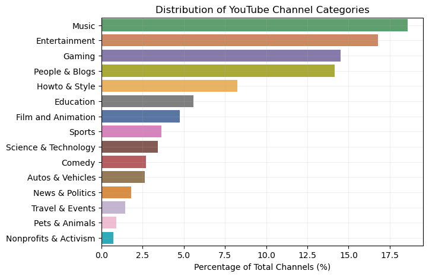 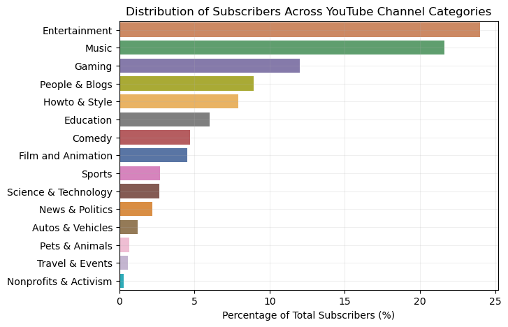 As we can see, the distribution of YouTube channels across categories is heavily dominated by Music, Entertainment, Gaming, and People & Blogs which together make up approximately 63% of all channels. These four big players are followed by a range of other categories having a large number of creators actively contributing to them. On the other end of the spectrum, more niche categories, such as Nonprofits & Activism and Pets & Animals, have far fewer channels, telling us that their appeal is much more specialized. When we look at the distribution of subscription volume across these categories, a similar trend appears, but with a few key differences. While the same four dominant categories together account for roughly 66% of subscriptions, Entertainment takes over in subscriber share. Categories like Education and Sports have a significant number of channels but a smaller share of subscribers, which could indicate more competition, i.e., a fragmented viewership. Let's take a look the average number of videos per channel for each category to understand content creation patterns. 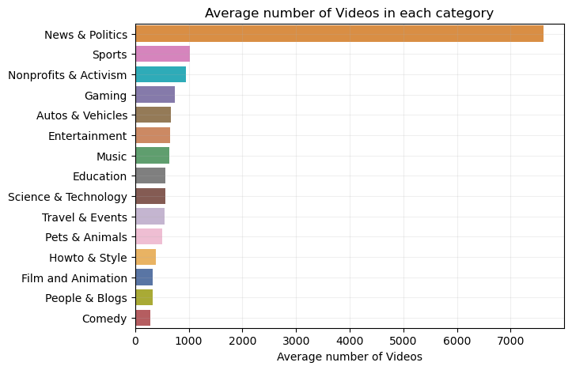 News & Politics channels have the highest number of videos per channel by far, publishing numerous videos each day to cover global events. Let's plot the total number of videos across all channels per category to compare the overall content volume. 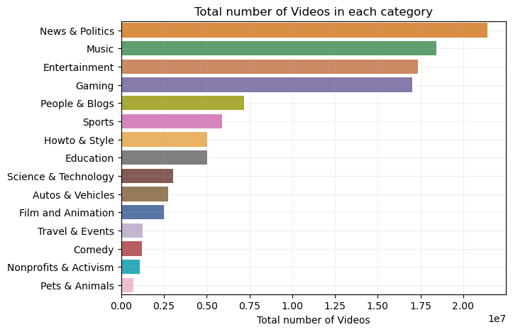 News & Politics remain in the lead despite their relatively low number of channels thanks to their large amount of videos, they are closely followed by categories like Entertainment, Music, and Gaming, which have a significantly larger number of channels. Afterwards, we visualize the average join date for each category to compare the relative age of channels across different categories. 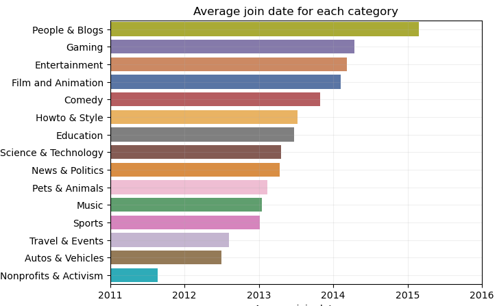 On average, the oldest channels are found in the Nonprofits & Activism and Auto & Vehicles categories, likely due to their long-established presence and stable audience. In contrast, the most recent channels, driven by trends and shifting interests, are found in People & Blogs and Gaming. Now we can examine how views are distributed among various categories, providing insights into which categories attract the most attention and engagement. 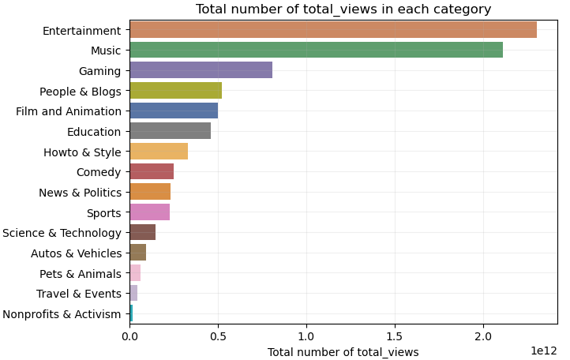 The categories that gather the most views are Entertainment and Music, as these categories are more general and trendy. In contrast, more niche categories like Autos & Vehicles, Pets & Animals, or Travel & Events are more specialized. The graph below examines the relationship between the number of views and the number of subscribers across different categories, using data from the channels and time_series datasets. This analysis aims to highlight how engagement varies by a ratio between videos & subscribers. 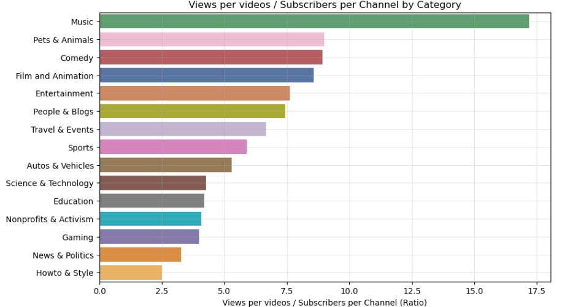 Since the creation of recommendation algorithms, fewer people watch videos from their subscribers list and tend to click on videos shown on their home page. Categories like Music are recommended to more people, but users don't subscribe as much. The same scenario applies to categories like Comedy or Film & Animation. In contrast, Gaming or News & Politics offer more specialized content and are recommended primarily to fans. This graph is strongly correlated to whether a channel targets a general audience. Let's dive into the trends in views and subscribers over time to uncover interesting patterns and insights across different categories. 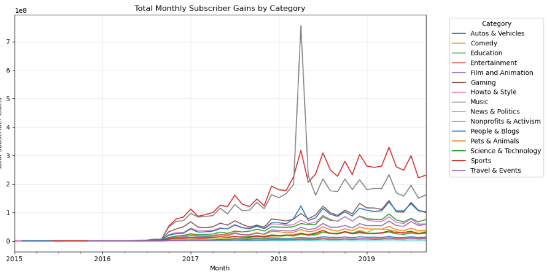 These two graphs show a cyclical evolution in the number of subscribers and views. This can be influenced by time periods when more people use YouTube, such as during holidays. Additionally, in winter, people tend to stay indoors and watch more content online. We observe a spike in subscribers in March 2023 for the Music category, which could be due to a music artist going viral and gaining subscribers rapidly. However, we lack sufficient data between 2015 and the end of 2016, which prevents us from fully analyzing the entire period from 2015 to 2019. Let's now look at the monthly evolution of newly created channels to explore trends across different categories. 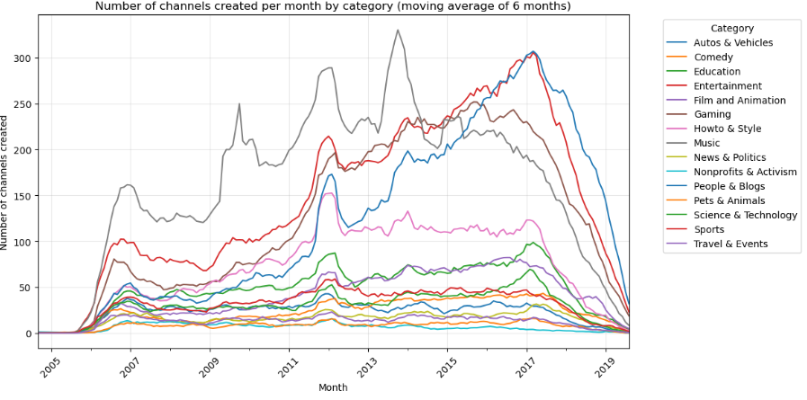This graph, which represents the number of channels created per month by category, reveals several interesting trends:
- First, it's important to note that our dataset represents videos from channels with more than 10k subscribers and more than 10 videos—channels that have essentially "made it". This is evident in the effects at the extremes of the graph. This limitation could introduce bias into our analysis.
- One notable trend is a general increase in all categories around 2012, likely due to a broader effect, possibly related to YouTube's growth or access at that time.
- Additionally, we observe that music channels were dominant until mid-2014, with peaks in channel creation driven by trends, as YouTube was primarily used to share music during this period. Few people were making a living on YouTube in other domains, which explains the lower creation rates in those categories.
- As the years go by, however, Entertainment and People & Blogs categories begin to emerge as YouTube staples, with more individuals becoming well-known and turning their channels into full-time careers, pushing these categories to the forefront by 2017.
Community Detection on Categories
YouTube's world of content is anything but isolated—categories constantly overlap, connected by audiences who love a mix of things. Communities naturally form where these categories intersect, bringing together viewers with shared interests across different types of content. In this section, we take a closer look at how these connections come to life, uncovering the relationships and overlaps that define the platform's unique ecosystem.
To get a better look at these connections, we use a heatmap to show the co-occurrence matrix of categories. It highlights how often categories overlap and where the strongest links are, making the clusters easy to spot.
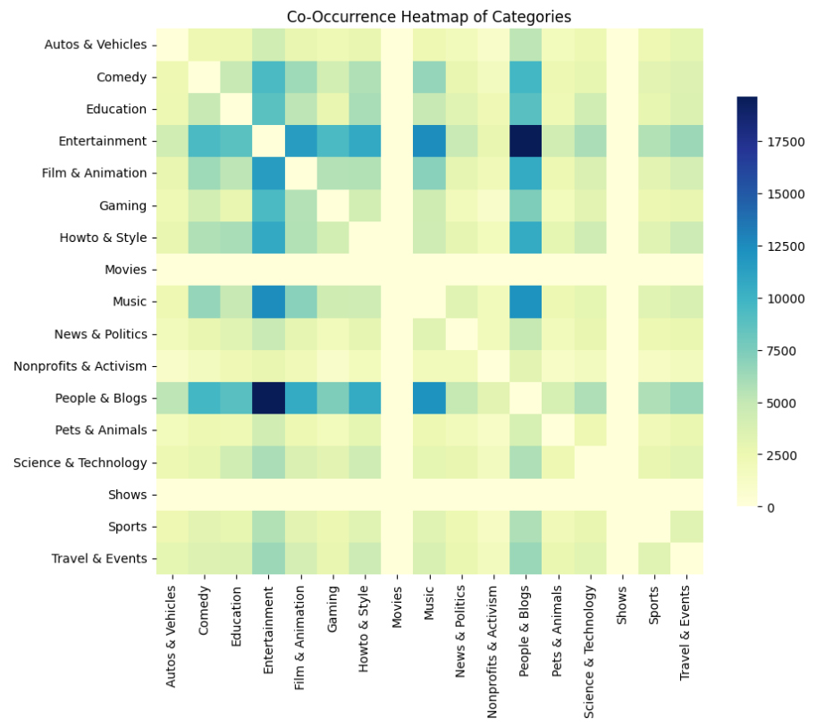
The heatmap shows that categories like Entertainment and People & Blogs act as central hubs, connecting a wide range of other categories. It also highlights strong overlaps between categories such as Gaming, Music, Film & Animation, and Comedy, revealing how these content types often go hand in hand.
To get a clearer picture of how content categories relate to each other, we turn the co-occurrence data into a network plot. Here, categories become nodes, and their connections—edges—show how often they appear together across channels. This network view helps uncover clusters of categories that are closely linked, offering insights into how creators group their themes and tap into overlapping audience interests. It's a powerful way to explore the dynamics of content diversification and identify key synergies shaping the platform.
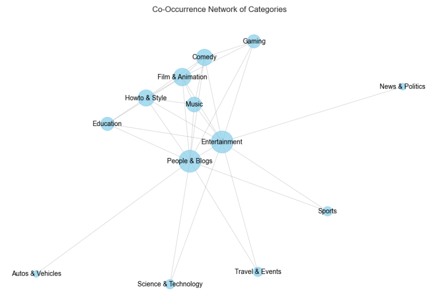
The central role of the "People & Blogs" and "Entertainment" categories suggests they serve as hubs that connect various other content genres on YouTube. These more general, cross-cutting categories likely overlap with and incorporate elements from more specialized categories. The clustering of "Gaming", "Music", "Comedy", and "Film & Animation" indicates these genres tend to co-occur and may share common audiences or creative elements. This makes sense, as gaming, music, comedy, and animated content often intersect in the entertainment space.
Similarly, the clustering of "Education" and "Howto & Style" points to synergies between instructional/tutorial content and self-improvement/lifestyle content. These categories likely cater to viewers seeking knowledge and personal development. The relative isolation of categories like "Sports", "Science & Technology", and "News & Politics" suggests they have more distinct, specialized content that does not overlap as readily with the broader entertainment and lifestyle-oriented categories. These genres likely appeal to more niche audiences.
After visualizing the co-occurrence network, we will apply clustering techniques to identify distinct groups of categories more clearly. This helps us pinpoint content clusters that frequently co-occur, revealing patterns in how channels organize their topics. To achieve this, we will use Louvain's method, a community detection algorithm that maximizes modularity to find optimal groupings. The method works by iteratively assigning nodes (categories) to communities in a way that increases the density of edges within communities while minimizing the density between them, providing clear, meaningful clusters.
Let's make things more interactive!
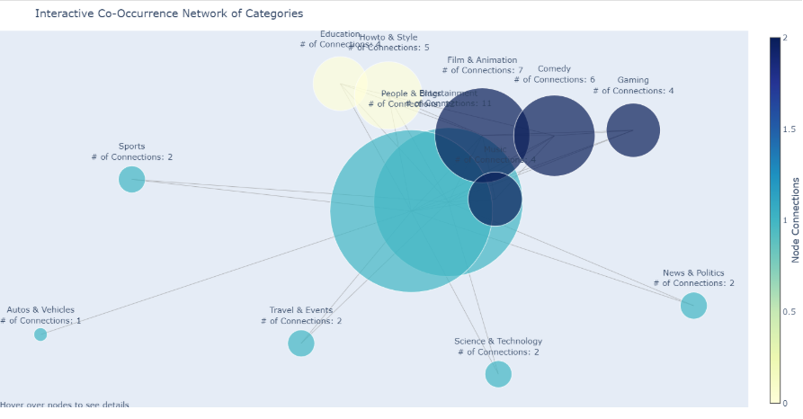
This plot reinforces the clusters identified in the previous visualization. However, it also highlights a limitation of Louvain's algorithm: it fails to recognize isolated categories as distinct clusters. Instead, these categories are often grouped with others, despite not sharing significant co-occurrence relationships. This issue arises because Louvain's method focuses on maximizing modularity, which can sometimes lead to less accurate representations of small or isolated communities that lack strong connections. To address this, additional refinement techniques or alternative community detection algorithms might be necessary to better capture these isolated categories.Design of a Channel Diversity Metric: A Quantitative Approach to Content Diversity
We want to evaluate the diversity of a channel based not only on the distribution of categories it publishes but also on the relatedness of those categories. Specifically, a channel that publishes content in categories that rarely co-occur (categories that are less related) should be considered more diverse than one that publishes content in closely related categories.
i. Entropy: Measuring Category Distribution
The entropy term captures the spread of content across different categories in a channel. If a channel focuses on a narrow set of categories, entropy will be low, while a more balanced distribution of content across categories will yield higher entropy. Formally, entropy is calculated as
where is the proportion of content in category (estimated directly from the channel's category distribution), and is the total number of unique categories within the channel. A higher value of entropy indicates that the channel is more diverse in terms of the variety of topics it covers.
ii. Normalized Mutual Information (NMI): Adjusting for Category Relationships
While entropy accounts for the spread of content, it does not capture how the categories are related. Channels that use categories with high co-occurrence may appear diverse at first glance, but in reality, they may be focusing on overlapping topics. To account for this, we incorporate Normalized Mutual Information (NMI).
The NMI between two categories and is given by:
where is the mutual information between categories and , and , are the individual entropies of the categories.
The mutual information is computed using the global co-occurrence matrix of categories across all channels:
where:
- is the probability of categories and co-occurring across all channels, and
- and are the global marginal probabilities of categories and , respectively.
If two categories often co-occur, their NMI will be high, suggesting they are not independent, and thus the diversity score is penalized for such overlap.
iii. The Full Diversity Metric
The final Channel Diversity Metric is computed as:
This formula combines the entropy term, which encourages a broad distribution of categories, with the NMI adjustment, which penalizes the use of highly related categories. The division by $(log(n))$ normalizes the score, ensuring comparability across channels with different numbers of categories.
1. Testing the Coherence of the Channel Diversity Metric
Before applying the Channel Diversity Metric on real-world data, we first want to verify its coherence by testing it on a few example channels. These examples are chosen to represent different types of content diversity, and we expect the metric to rank them accordingly based on the diversity of their categories.
The example channels are : Gaming-focused, Diverse-related, Diverse-independent and Comedy-only
The expected ranking of the channels in terms of diversity is:
- Diverse-independent: Highest diversity (varied, unrelated categories).
- Diverse-related: Moderate diversity (some overlap between categories).
- Gaming-focused: Lower diversity (dominant "Gaming" category with some overlap).
- Comedy-only: Lowest diversity (single category).
| Channel | Diversity Score |
|---|---|
| Diverse-independent | 2.775469 |
| Diverse-related | 1.633916 |
| Gaming-focused | 0.589424 |
| Comedy-only | 0.000000 |
The results seem to be coherent with our expectations. Nice!
2. Application on real channel data
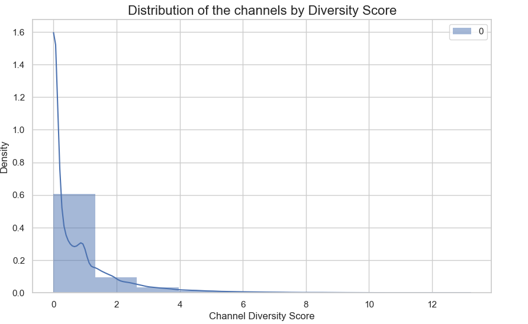From the histogram of channel frequencies and their corresponding diversity scores, we observe that several potential generative laws could explain the observed distribution. The distribution could follow one of the following forms:
Exponential Distribution: The probability density function (PDF) is given by:
Truncated Normal Distribution: A normal distribution restricted to a specific range, typically used when data is confined within certain bounds. The truncated normal PDF is:
where $\phi$ is the standard normal PDF and $\Phi$ is the cumulative distribution function (CDF).
Gamma Distribution:
Beta Distribution:
To determine which of these distributions is most plausible for our diversity score data, we proceed by analyzing their goodness of fit. The first step in this process is to visualize the data against the theoretical distribution using a Quantile-Quantile (QQ) plot: A QQ plot compares the quantiles of the empirical data against the quantiles of a given theoretical distribution. If the data follows the proposed distribution, the points in the QQ plot will lie approximately on a straight line.

Upon examining the Q-Q plots for each candidate distribution, it becomes evident that the gamma and beta distributions are the most plausible candidates for the true generative model. This observation highlights the limitations of relying solely on visual inspection to determine a sample's underlying distribution. While initial examination of distribution plots suggested that the exponential and truncated normal distributions were strong contenders, the Q-Q plots reveal significant deviations, indicating that these distributions are less likely to fit the data accurately.
To further solidify our conclusions, we will now compute both the log-likelihood and the mean squared error (MSE) of the Q-Q plots. These quantitative measures will help us determine, with greater confidence, which distribution best fits the observed data.
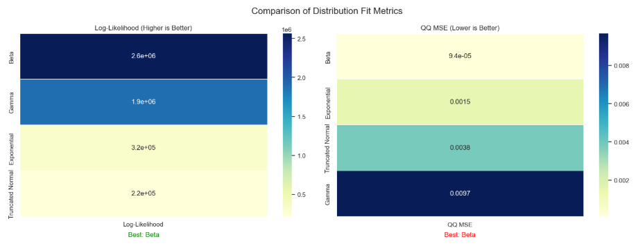The fact that YouTube channel diversity scores follow a Beta distribution implies that most channels tend to focus on a narrow set of categories, resulting in low diversity scores. This indicates that many creators prefer specialized content strategies, sticking to a limited range of topics. The flexibility of the Beta distribution also suggests that while some channels embrace broader content diversity, the majority operate within a more restrictive set of categories, reflecting strategic choices for niche targeting or audience consistency.
By identifying the true generative law, we can make afterwards more accurate predictions about a channel's future diversity scores. This understanding enables us to model the relationship between content strategy and diversity, allowing for better forecasting of how changes in content focus might impact a channel's diversity over time. It also provides a foundation for identifying trends and anomalies in content categorization across different channels.
3. Inspecting optimal diversity domains
In order to explore the relationship between channel diversity and success, we aim to divide the diversity domain into three distinct categories: low, moderate, and high diversity. This approach will help us identify whether certain levels of content diversity are correlated with greater channel success. To ensure that our findings are not overly reliant on specific data subsets and can be generalized across different types of channels, we will use the theoretical quantiles of the Beta distribution to define these categories. By leveraging these quantiles, we can create well-balanced groups based on the natural spread of the diversity scores, ensuring statistical rigor and minimizing any bias that might arise from arbitrary cutoffs.
Furthermore, by constructing balanced domains, we can ensure that each category has an adequate representation of channels, which will allow us to draw meaningful, statistically significant conclusions about how diversity levels affect channel success. This method helps avoid overfitting to specific trends in the data, leading to more robust, generalizable insights.
i. Example
We begin by dividing the diversity domain into three categories using q1=0.1 and q2=0.6, ensuring a balanced distribution across categories. Next, we will examine whether these diversity categories have an impact on subscriber count.
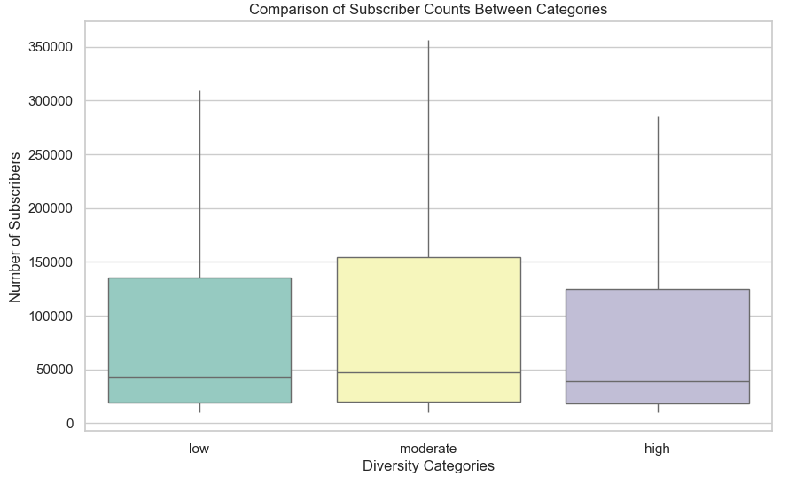From the initial plot, it appears that there is a significant difference in the number of subscribers across the three diversity categories. However, as emphasized earlier, visual inspection alone is not sufficient to draw reliable conclusions. To rigorously support our claim, we will apply non-parametric statistical tests to assess whether the observed differences are statistically significant.
To test for differences between the three diversity categories, we will use the Kruskal-Wallis test. This test is appropriate because it does not assume a normal distribution of the data and can compare more than two groups. The null hypothesis for this test is that all groups have the same distribution, while the alternative hypothesis is that at least one group differs significantly from the others.
We will proceed with pairwise comparisons using the Mann-Whitney U test. This test will allow us to compare each pair of diversity categories to identify which specific groups differ from each other. The Mann-Whitney U test is a non-parametric test that compares the ranks of two independent groups, with the null hypothesis being that the two groups come from the same distribution.
ii. Identifying the Optimal Diversity Region
Now that we have established statistical significance regarding the differences in subscription distributions across the three diversity categories, we aim to identify the optimal diversity region for channel success. To do this, we will perform a grid search across different quantile values for q1 and q2, which define the boundaries of the diversity categories.
The grid search will be constrained by the requirement to maintain fairly balanced categories. Specifically:
- When q1 = 0 or q2 = 1, we will limit the search to two categories, ensuring they are balanced (dividing the diversity domain into a low and high diversity category).
- Otherwise, for intermediate values of q1 and q2, we will examine three balanced categories, each representing a distinct diversity level (low, moderate, and high).

From our analysis, it appears that the optimal domain for maximizing subscription counts lies within the moderate diversity category, defined by the quantile values 𝑞1=0.05 and 𝑞2=0.6. This domain seems to strike a balance between channels that focus too narrowly on a small set of categories (low diversity) and those that attempt to cover too many topics (high diversity).
Channels within this moderate diversity range likely benefit from a combination of the following factors:
Targeted Content Strategy: Channels that operate within this domain may be focusing on a broad but still manageable range of topics. They are not too specialized to limit their audience, nor are they too generalized to lose focus. This balance may help attract a more consistent and engaged subscriber base.
Audience Engagement: Channels that span a moderate number of categories can cater to a variety of viewer interests, leading to increased engagement. At the same time, they avoid spreading themselves too thin across unrelated topics, which could dilute the channel's identity and cause audience fragmentation.
Content Differentiation: By staying within the moderate diversity range, these channels are likely to stand out in niche areas without competing with the most generalized or overly specific content. This positioning could lead to higher discoverability and a greater likelihood of attracting subscribers who are interested in a curated but diverse set of topics.
Statistical Support: The significant differences in subscription counts observed within this moderate diversity range, as confirmed by statistical tests, suggest that the choice of content breadth within this domain positively influences channel growth. This is likely due to the fact that it aligns with a larger, more engaged audience while still maintaining a distinct channel identity.
Remark
We plan to extend this analysis to other key metrics, including viewership, likes, and the number of comments. By examining how these metrics relate to different diversity domains, we aim to gain a more comprehensive understanding of how content diversity impacts not only subscriber growth but also overall engagement and interaction across YouTube channels.